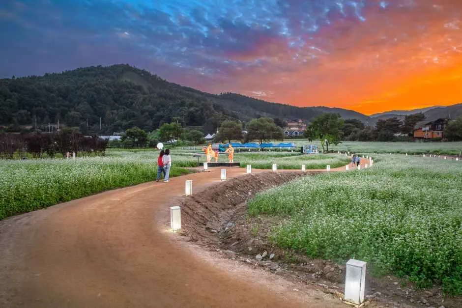
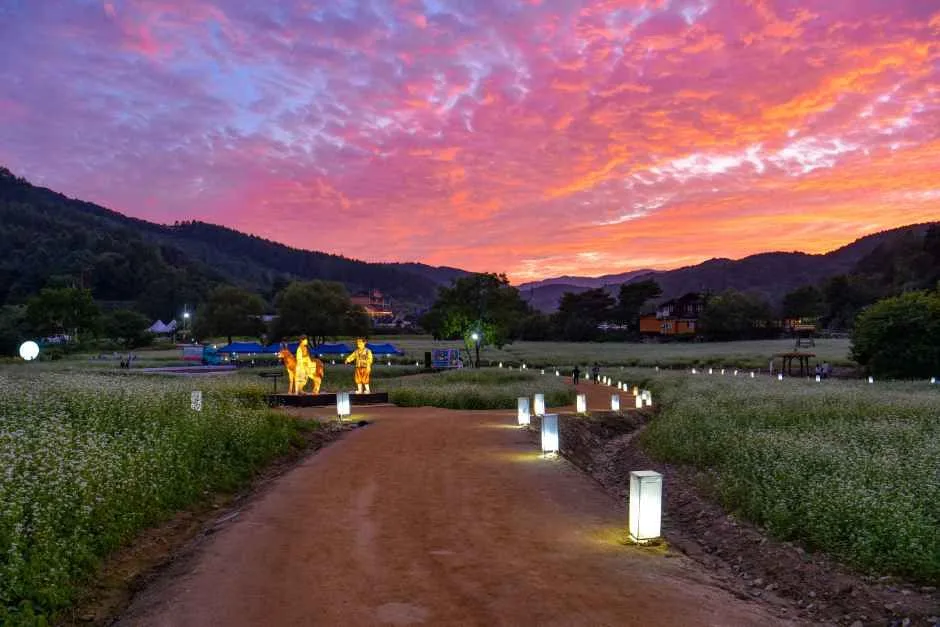
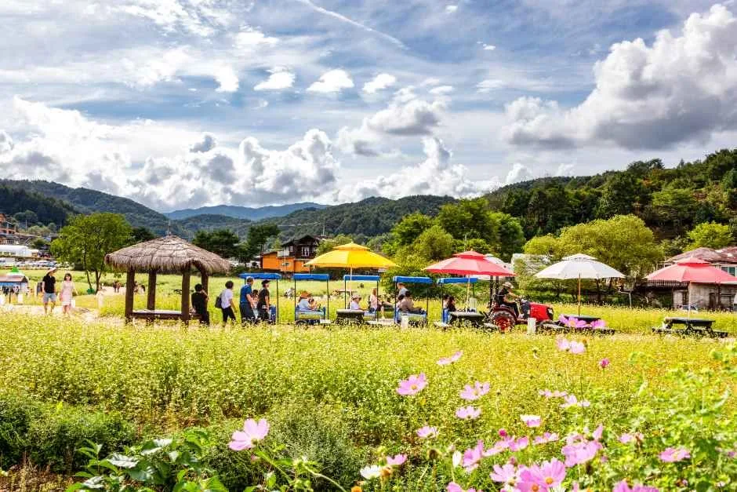
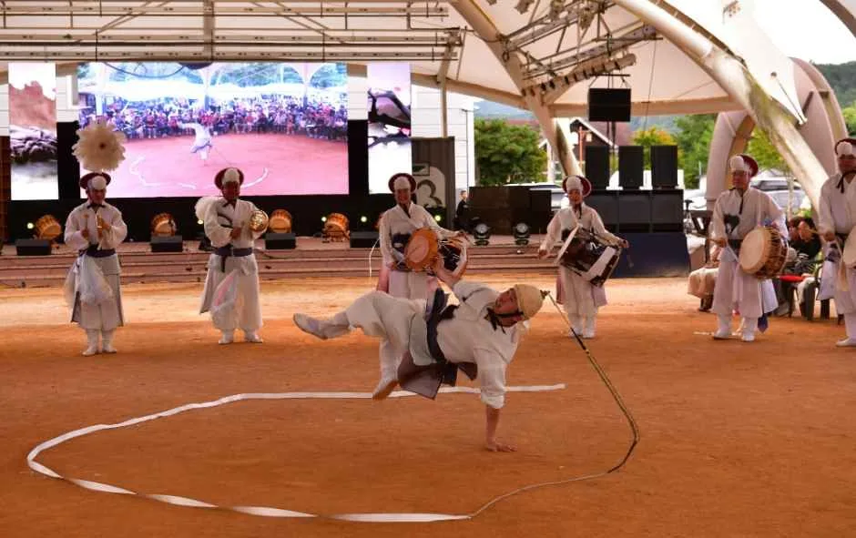
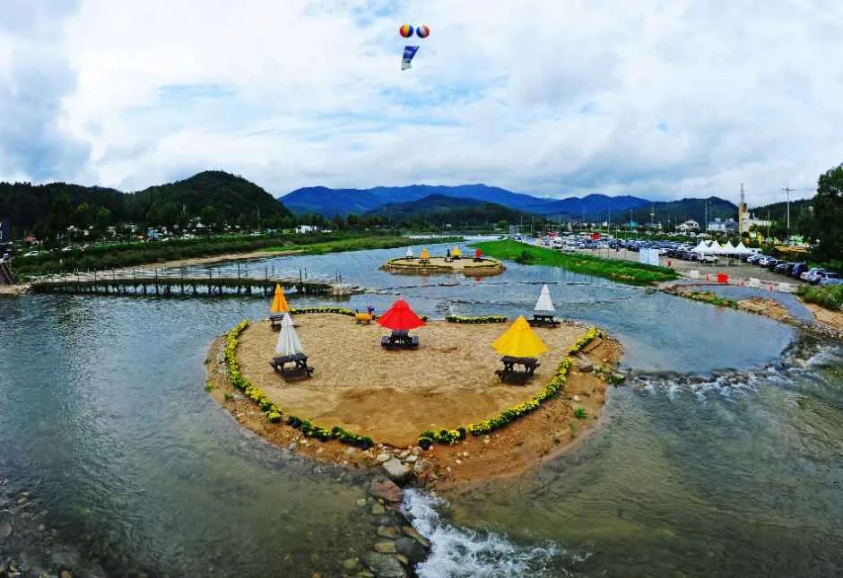
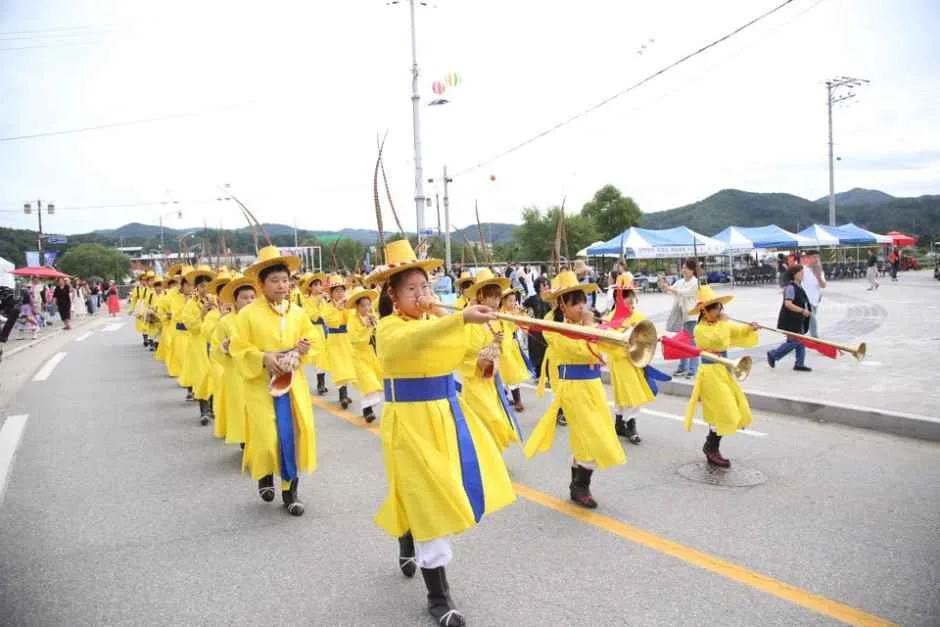
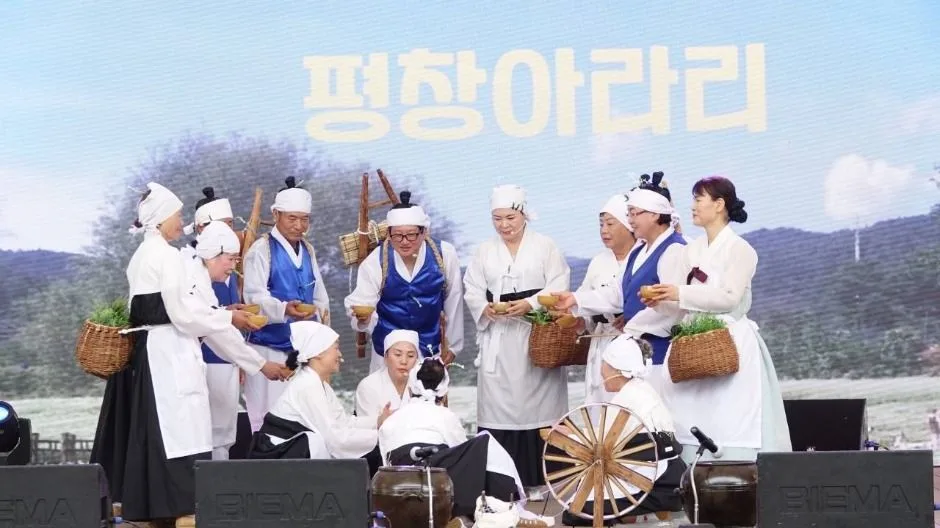
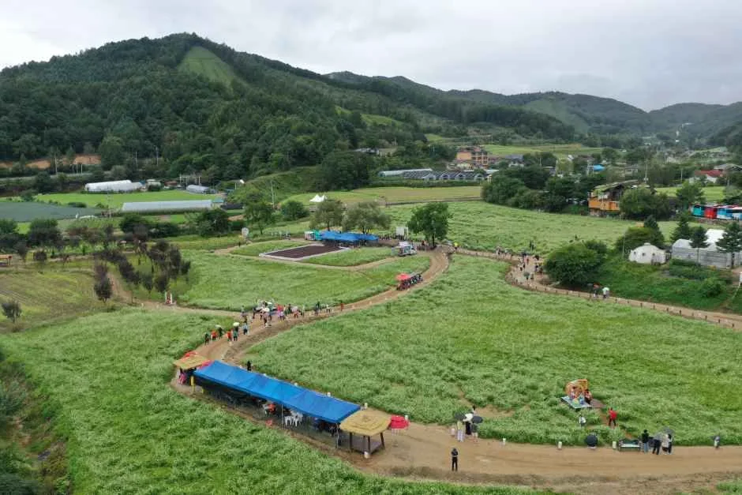

▲ 해질녘 붉게 물든 봉평 메밀꽃밭 산책로. 2026 평창효석문화제는 이 메밀꽃밭 일대에서 9월 4일부터 13일까지 열린다 ⓒ 대한민국 구석구석(한국관광공사)

▲ 노을과 함께 등불이 켜진 메밀꽃밭 야경. 해가 완전히 지기 전 하늘에 붉은빛이 남아있는 시간대가 사진 찍기 가장 좋다 ⓒ 대한민국 구석구석(한국관광공사)
강원 평창군 봉평면 일대가 다시 하얀 메밀꽃으로 뒤덮였다. 2026 평창효석문화제가 9월 4일부터 13일까지 열흘간 봉평면 효석문화마을 일원(이효석길 157)에서 열린다. 이효석의 단편소설 '메밀꽃 필 무렵'(1936년 잡지 《조광》 발표)의 실제 배경지가 바로 이곳으로, 장돌뱅이 허생원과 성서방네 처녀가 하룻밤 인연을 맺는 무대가 됐던 봉평·대화 일대 장터의 정취를 지금도 느낄 수 있다.
1. 허생원과 성서방네 처녀, 그 봉평 장터

▲ 메밀꽃밭 사이로 들어선 축제 부스. 소설 속 장터의 정취를 살려 구성됐다 ⓒ 대한민국 구석구석(한국관광공사)
이효석(1907~1942)은 강원도 평창 출신 소설가로, 대표작 '메밀꽃 필 무렵'에서 봉평 장터를 오가는 장돌뱅이 허생원의 시선으로 흐드러진 메밀꽃밭을 서정적으로 그려냈다. 실제 작가의 고향이기도 한 봉평면에는 이효석문학관이 자리하고 있어, 그의 생애와 작품 세계를 살펴볼 수 있는 문학전시실과 문화체험 공간인 문학교실을 갖추고 있다. 축제 기간에는 이 문학관과 인근 달빛 언덕이 전면 무료로 개방돼, 입장료 없이도 소설의 배경을 거닐 수 있다.

▲ 노란 전통 복장을 갖춰입은 참가자들의 길놀이 행렬. 3구역 '축제 마당'에서 만날 수 있는 프로그램 중 하나다 ⓒ 대한민국 구석구석(한국관광공사)
2. 3개 구역으로 나뉜 축제장 — 무엇을 할 수 있나

▲ 축제마당(3구역)에서 펼쳐지는 봉평 민속 공연. 마당극과 길놀이 등 오감으로 즐기는 프로그램이 이 구역에 몰려 있다 ⓒ 대한민국 구석구석(한국관광공사)
축제장은 성격이 다른 세 구역으로 나뉜다. 1구역 '문화예술마당'은 메밀꽃밭과 이효석문학관을 중심으로 한 문학 탐방 공간으로, 송일봉 작가와 함께 걷는 '효석 100리길', 해설사와 함께하는 문학 산책, 이효석문학상 작가 북콘서트가 열린다. 2구역 '체험 마당'에서는 섶다리·돌다리를 건너는 장돌뱅이 여정 체험, 낙엽 태우기 불멍, 음악과 함께하는 사랑의 엽서 쓰기, 메밀꽃밭 속 황금 메밀 찾기, 문학 열차, 스탬프 투어를 즐길 수 있다. 3구역 '축제 마당'은 봉평 민속 공연과 마당극, 길놀이, 떡메치기, 오일장, 토속 먹거리로 채워진다.
| 구역 | 테마 | 주요 프로그램 |
|---|---|---|
| 1구역 | 문화예술마당 | 메밀꽃밭, 이효석문학관, 효석 100리길, 문학 산책, 북콘서트 |
| 2구역 | 체험 마당 | 섶다리·돌다리 장돌뱅이 여정, 불멍, 사랑의 엽서 쓰기, 황금 메밀 찾기, 문학 열차, 스탬프 투어 |
| 3구역 | 축제 마당 | 봉평 민속 공연, 마당극, 길놀이, 떡메치기, 오일장, 토속 먹거리 |
📍 무료로 즐길 수 있는 것들
입장료 5,000원과 별개로 황금메밀찾기, 스탬프 투어, 음악사연 신청, 오후 6시 이후 불멍은 추가 비용 없이 참여할 수 있다. 이효석문학관과 달빛 언덕도 축제 기간 한정으로 무료 개방되므로, 예산을 아끼고 싶다면 이 항목들부터 챙기는 것이 좋다.
3. 메밀꽃, 지금이 절정 — 사진 명소는 어디

▲ 흥정천의 하트 모양 섬을 드론으로 내려다본 모습. 축제장 인근 대표 포토 스폿 중 하나다 ⓒ 대한민국 구석구석(한국관광공사)
9월 6일 기준 현지 보도로는 "메밀꽃이 한창인 상황"으로 전해졌다. 다만 개화 정도는 해마다 기온과 강수량에 따라 달라지고 공식 개화율이 별도로 발표되지는 않으므로, 방문 직전 평창군 관광 안내 채널에서 최신 상황을 확인하는 편이 안전하다. 물레방앗간과 충주집, 흥정천 일대는 메밀꽃과 강원도 산자락이 함께 담기는 대표적인 포토 스폿으로 꼽히며, 해가 완전히 지기 전 하늘이 붉게 물드는 시간대에 조명이 하나둘 켜지는 산책로도 야간 촬영 명소다.
4. 오일장은 9월 7일과 12일뿐 — 놓치면 아쉬운 이유

▲ 노란 전통 복장을 갖춘 관악대의 거리 행진. 축제 기간 낮 시간대 거리 곳곳에서 흥을 돋우는 프로그램 중 하나다 ⓒ 대한민국 구석구석(한국관광공사)
봉평 전통 오일장은 평소에도 열리지만, 축제 기간 중에는 9월 7일과 12일 단 이틀만 장이 선다. 소설 속 장돌뱅이의 무대였던 장터 분위기를 가장 실감 나게 느낄 수 있는 날이 바로 이 이틀이므로, 일정을 짤 때 우선 고려할 만하다. 토속 먹거리 부스와 떡메치기 체험도 이 시기에 맞춰 활기를 띤다. 12일은 토요일과 겹쳐 방문객이 가장 몰리는 날로 예상되니, 오전 11시 이전 도착을 권한다.

▲ 전통 복장을 갖추고 물레를 돌리는 '평창아라리' 공연. 오일장이 서는 날 함께 만날 수 있는 대표적인 민속 공연이다 ⓒ 대한민국 구석구석(한국관광공사)
5. KTX 평창역 무료 셔틀 — 주차는 임시주차장에서

▲ 드론으로 내려다본 효석문화마을 축제장 전경. 임시주차장은 이 마을 일대에 분산 배치된다 ⓒ 대한민국 구석구석(한국관광공사)
축제 기간에는 봉평면 일대에 임시·지정주차장이 운영된다. 다만 정확한 구획과 배치는 매년 현장 상황에 따라 조정되는 편이라 사전 공지가 늦게 나오는 경우가 많으므로, 방문 당일에는 진입로에 설치된 안내 표지판과 현장 안내 요원의 지시를 따르는 것이 가장 확실하다. 자차보다 대중교통을 이용한다면 KTX 평창역과 축제장을 잇는 무료 셔틀버스를 이용할 수 있다. 차로 이동한다면 오전 11시 이전 도착을 권하며, 특히 오일장이 서는 9월 12일은 토요일과 겹쳐 점심 무렵이면 가까운 주차 공간이 대부분 찬다는 점을 감안해야 한다.
✅ 평창효석문화제, 이것만은 확인하세요
· 축제 기간 9월 4일~13일, 장소는 봉평면 효석문화마을 일원(이효석길 157)
· 입장료 5,000원, 36개월 미만·장애인·국가유공자는 무료
· 이효석문학관·달빛 언덕은 축제 기간 무료 개방
· 전통 오일장은 9월 7일·12일 단 이틀뿐
· KTX 평창역↔축제장 무료 셔틀버스 운행, 주차는 임시주차장 이용
6. 정리
평창효석문화제는 소설 '메밀꽃 필 무렵'의 배경지에서 문학과 자연, 체험이 어우러지는 가을 축제다. 9월 13일까지 열흘간 이어지는 만큼, 아직 방문 계획이 없었다면 오일장이 서는 9월 12일이나 축제 막바지 평일을 노려볼 만하다. 입장료 5,000원으로 문학 산책과 체험 프로그램을 두루 즐길 수 있고, KTX 평창역 무료 셔틀을 이용하면 주차 걱정 없이 다녀올 수 있다. 정확한 개화 현황과 주차장 배치는 방문 직전 평창군 관광 안내 채널에서 다시 확인하는 것이 안전하다.